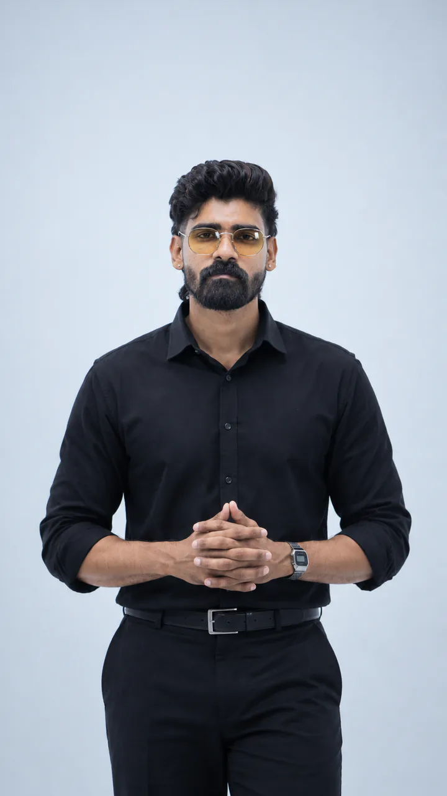
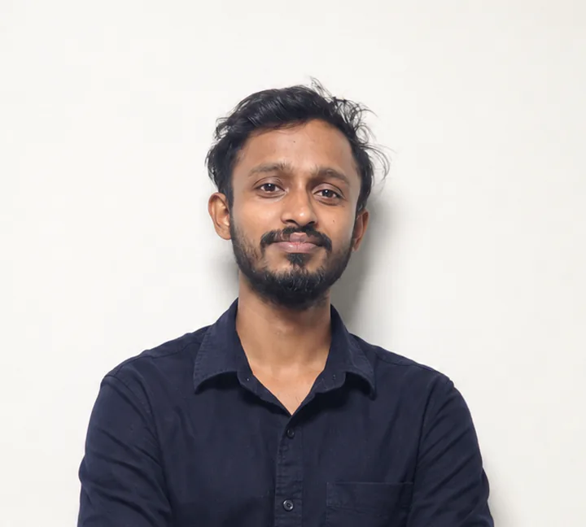
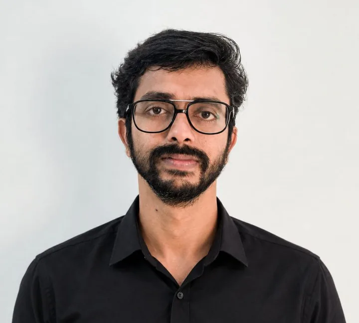
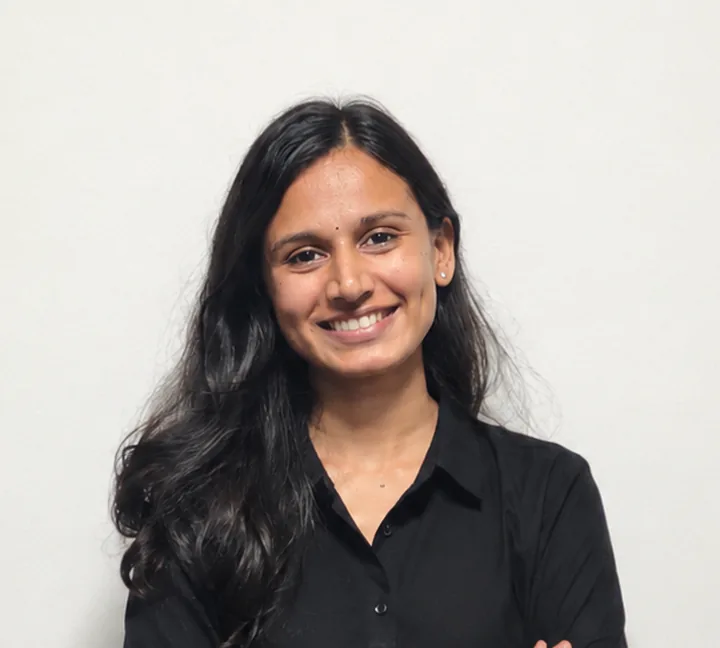

Vision
A more meaningful and outcome-oriented approach to career development and talent solutions.

An integrated career development & talent solutions company, established in Kerala in 2020.
Kompetenzen Technologies was established in 2020 with a vision to create a more meaningful and outcome-oriented approach to career development and talent solutions.
The company was founded by an entrepreneur with over a decade of experience in the skill development industry, corporate training, fresher recruitment, soft skills development and employability enhancement.
Through years of working closely with students, institutions and corporate organisations, one fundamental gap became evident: individuals were often choosing courses and career paths without adequate guidance, while employers continued to seek candidates with the right combination of technical knowledge and professional competencies.
This understanding shaped the foundation of Kompetenzen. Rather than operating as a conventional training institution, the company adopted a more holistic philosophy built around three interconnected pillars:
Consultation.Training.Placement.
We believe that meaningful career development begins with understanding the individual, continues through relevant learning and professional preparation, and ultimately connects talent with genuine industry opportunities.
Today, this philosophy guides our integrated approach to career consultation, professional development, technology and business education, and talent solutions.
A more meaningful and outcome-oriented approach to career development and talent solutions.
Understand the individual, enable relevant learning and professional preparation, and connect talent with genuine industry opportunities.
Established
11 major job drives successfully conducted; more than 100 talent hunts conducted for corporate recruitment requirements.
Approximately 3,000+ individuals connected with career opportunities.

At Kompetenzen, we believe that a nation’s progress is driven by the knowledge, skills and productivity of its people.
Our vision is to bridge the gap between education and industry by creating a skilled, competent and future-ready workforce. We are committed to reducing unemployment through meaningful skill development, enhancing individual capabilities and improving workforce productivity.
Through industry-oriented learning, practical exposure and continuous development, we strive to empower individuals, strengthen organisations and create greater employment opportunities.
Our ultimate goal is to contribute to a skilled workforce, a stronger economy and a progressive nation.
Empowering People. Strengthening Industries. Building a Better Nation.

Executive Director – Corporate Relations · Head of HR · Corporate Soft Skills Trainer
An HR leader and soft skills trainer with 10+ years in HR, spanning corporate relations, career consulting and placements. Her practical, industry-focused training turns graduates into confident, workplace-ready professionals.

Communication Trainer · Language & Communication Coach
Combines academic depth with practical coaching to sharpen graduates' English, communication and interview skills, helping them through every stage of the interview process and into the jobs they want.
Technical Lead
Technical Lead with 4+ years of experience in software development, guiding aspiring developers in application architecture, technical problem-solving, and industry-oriented development practices.
Team Lead – Learning & Training
Full-stack development professional with 3+ years of experience and 2+ years in technical training, mentoring students through practical projects in Java, Python, and React.

Software Engineer
Software engineering professional with 3 years of experience, helping students strengthen their programming, application development, and problem-solving skills through practical learning.
Team Lead – Learning & Training II
Technical training and leadership professional with 4.5+ years of experience, combining full-stack development expertise with mentoring in Python, Java, React, and modern web technologies.

Technical Lead
Software engineering and technical training professional specializing in gen AI, Python, JavaScript, Django, React, full-stack development and automation. Leads technical training, mentors aspiring developers through real-world projects, and bridges industry practices with career-focused learning.

Senior Data Analyst
Data analytics professional with experience in MS Excel, Power BI, Tableau, SQL and Python, bringing practical analytical expertise and a data-driven approach to developing students' analytical and problem-solving skills.
Junior Software Engineer
Software engineering professional with experience in Python, JavaScript, React, Django and SQL supporting students in programming fundamentals, software development, and practical coding through hands-on learning.
Junior Data Analyst
Data analytics professional with experience in MS Excel, Power BI, Tableau, SQL and Python, mentoring students in Data Analytics concepts with a focus on practical analysis and data visualization.
Junior Software Engineer
Software engineering professional with 3+ years of experience, supporting aspiring developers in building strong programming foundations, technical confidence, and practical development skills.
Every journey starts with understanding the person, backed by more than a decade of founder experience.
Career-focused programmes that build professional competencies alongside technical knowledge.
An integrated career platform for profiles, ATS-friendly resumes, jobs and internships.
Corporate recruitment experience and institutional engagement across Kerala, with a constant focus on employability.
Book a career consultation, or visit our campuses in Vyttila, Kochi and Palayam, Thiruvananthapuram.
Book a Career Consultation →